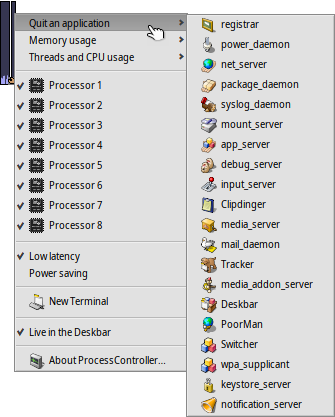
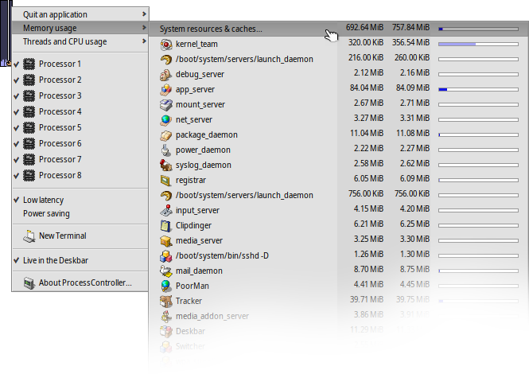

日本語
日本語 Català
Català Deutsch
Deutsch English
English Español
Español Français
Français Italiano
Italiano Magyar
Magyar Polski
Polski Português
Português Português (Brazil)
Português (Brazil) Română
Română Slovenčina
Slovenčina Suomi
Suomi Svenska
Svenska 中文 ［中文］
中文 ［中文］ Русский
Русский Українська
Українська プロセスコントローラー (ProcessController)
プロセスコントローラー (ProcessController)
| Deskbar: | ||
| 場所: | /boot/system/apps/ProcessController | |
| 設定ファイル: | 無し |
 プロセスコントローラー (ProcessController) は CPU と物理メモリの使用率の表示を主な目的としています。プロセスコントローラーにより、個々のチームの観察、優先度の変更、およびそれらがフリーズした場合に強制終了できます。マルチプロセッサ環境では、プロセスコントローラーによって個々の CPU を有効 / 無効にできます。Tracker と Deskbar がクラッシュしたとき、プロセスコントローラーのメニューから再起動できます。
プロセスコントローラー (ProcessController) は CPU と物理メモリの使用率の表示を主な目的としています。プロセスコントローラーにより、個々のチームの観察、優先度の変更、およびそれらがフリーズした場合に強制終了できます。マルチプロセッサ環境では、プロセスコントローラーによって個々の CPU を有効 / 無効にできます。Tracker と Deskbar がクラッシュしたとき、プロセスコントローラーのメニューから再起動できます。
左側のインジケーターはそれぞれの CPU の使用率を表して右側のインジケーターはメモリ使用量を表します。インジケーターの数はシステムのプロセッサ / コア数に依存することを覚えておいてください。
まだ実行していなければ、プロセスコントローラーを起動する際に、ウィンドウモードか Deskbar モードのどちらで開くかを選択してください。ウィンドウモードでは、ウィンドウのサイズを変更して、レプリカントを使ってデスクトップにドラッグすることもできます。
どちらのモードでも、プロセスコントローラーは右クリック経由のコンテキストメニューで使います。
Deskbar から再び削除するには、コンテキストメニューの のチェックボックスをオフにします。
アプリケーションを終了
アプリケーションを終了するには、 メニューでアプリケーション名をクリックしてください。これは、強制終了ではなく、「閉じる」ボタンのクリックと同様のアプリケーションの正しい終了方法です。しかし、サーバーやデーモンのようなシステムのプロセスを終了しないように注意してください。その場合には、システム全体の実行が停止するかもしれません。
メモリ使用量
メモリ使用量の監視はかなり不正確になることがあります。
このメニューではシステムでのチームのメモリ使用量を観察できます。チーム名のそばに 2 つの列があります。1 番目の列は書き込み可能メモリの量で、2 番目は読み込み専用メモリ (たとえば共用ライブラリ) 込みのメモリ量です。
一番目の行、システムリソースとキャッシュ… (System resources & caches...) はシステムおよびすべてのアプリケーションで使用されているメモリの数を表示します。青いバーの長さはコンピューターの物理メモリ量によります。次の行はそれぞれのプロセスを使用しているメモリ量を表示します。注：バーの長さはメモリを使用している部分だけによります。
| 特定のアプリケーションだけが使用しているメモリ (書き込み権限あり) | ||
| 読み取り空間のメモリを含む (ほかのアプリケーションと共有可能) |
スレッドと CPU 使用率
このメニューでスレッドの優先度の変更、チームの終了、デバッグもできます。
| カーネルコード | ||
| ユーザーコード | ||
| 待機スレッド |
最初のレベルはチーム名です。1 つをクリックするとチーム全体を終了します。バーのダークブルー部分はカーネルコード内で消費した時間、ライトブルーの部分はユーザーコード内で消費した時間、そして緑の部分は待機スレッドです。完全に青くなったバーは、チームがすべてのプロセッサパワーを使用していることを意味します。
2 番目のレベルはチームのスレッドを表示します。クリックすると、デバッグまたは強制終了できます。完全に青くなったバーは、スレッドが 1 つのプロセッサ/コアを固定していることを示します。
最後のレベルはスレットの優先度を変更できますが、変更は注意してください。大雑把に言って、スレッドの優先度はその CPU 使用量とは反対になるべきです。つまり、優先度を上げると CPU 時間を要求しようとし、優先度を下げなければなりません。一般に、アプリケーションの優先度をいじってはいけません。アプリの作者に連絡してください。優先度の変更は彼らの行うことです。